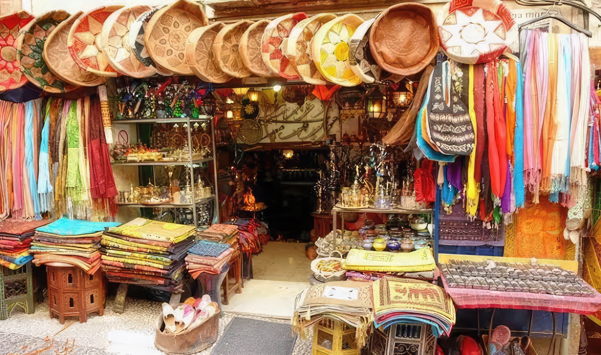
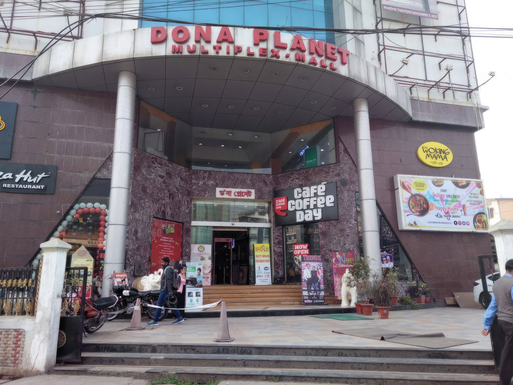

Shopping in Guwahati
Shopping is a necessity for all and a luxury to many! Everyone has a unique taste and style in shopping.
And as such when you are in Guwahati and you want to shop and take back home souvenirs and mementos for your beloved one then you will get a wide range of options in front of you.
There is always something for everyone in Guwahati to shop.
Shopping in Guwahati will offer you a wide range of products from traditional handloom and silk items like “pat”, “muga” and “endi”, the famous “mekhla chadar”, traditional Assamese Jewellery, traditional souvenirs like “Gamosa”, “Japi” and “Xorai”, decorative pieces made of bamboo and cane, tribal arts and handicrafts and then even trendy artificial jewellery.
The malls, markets and local bazaars in Guwahati are all filled with items that will mesmerise you.
NEDFi Haat Guwahati

If you are a shopaholic for handloom and handicraft items then NEDFi Haat would be a good place for you to purchase some very good handloom and handicraft items and also ethnic and local goods. The NEDFi Haat is a place where exhibitions, fairs and handicraft melas are organized. The NEDFi Haat has been created for promoting marketing of the products of the unorganised sector in Assam. It is a joint initiative of Department of Industries, Government of Assam and NEDFi. NEDFi Haat is a famous exhibition ground among the weavers and craftsmen associated with the indigenous handicraft and handloom sector. Government Agencies like NEHHDC, DRDA, SIFT , NSIC etc also prefer the NEDFi Haat to organise their fairs for promoting and marketing of their beneficiaries. NGOs who work for the promotion of the Cottage and Small sector too use the facility for providing direct linkage between the consumers and producers.
Every year Pre-Rongali Bihu fair and Pre-Bhogali Bihu fair is organised here in the NEDFi Haat which has helped the state to promote and commercialise the ethnic traditional handloom and food items of the state.
You will amazed by the handloom and handicraft expo, textile and handicraft fair, hasta shilpa mela, fashion and lifestyle exhibition, Bihu mela, Durga puja mela, Diwalai mela, sales on handloom and handicraft and so many other exhibitions organized every year in NEDFi Haat for the consumers. So what are you waiting for? Grab your bag and rush to the NEDFi Haat and get the best handicraft items in town.
NEDFi Haat Address and contact number:
Shopping Malls & Complexes in Guwahati

Be it a local market or a mall - shopping in Guwahati is always a pleasure! The GS Road (Guwahati Shillong Road) here is the home to the famous malls and shopping complexes in Guwahati.
Here is a list of the shopping malls located in Guwahati with information on their address and contact number.
Dona Planet
HUB
Sohum Shoppe
Sohum Emporio
Westside
Pantaloons
Big Bazar
Metro Bazar
Vishal Megamart
Reliance Trendz
Spanish Garden
Prince Super Market
Stores to buy Assam Silk
You cannot get enough of the Assam Silk whether it is the famous Mekhela Chador or Sarees or Kurta Payjama. You are also bound to appreciate the three famous varieties of Assam Silk that are the ever beautiful “Paat silk”, Muga silk (exclusive to Assam) and Eri available in thousands of designs in the silk showrooms, stores and emporiums. There are many showrooms for silk items in Guwahati. Check out the silk items in the following showrooms in Guwahati.
The Silkalay
The Silkalay
Mayuri Silk Palace
Kalpataru Silk House
Kalpataru
Manju Silk Centre Pvt Ltd
Assam Silk Saree Shop
Raw Silk Emporium
Chayanika Silk Centre
Royal srijan
Aunty's Shop
Meghna's Boutique
Madhushree Silk
Sri Trinayan Silks
Anita Silk House
Chandan Silk House
Silk Country
Rajmati Silk
Pragjyotika Enterprise
Baishya Silk Emporium
Baishya Silk Emporium
Bimala
Brindabani Silk Emporium
Kasturi K+
Kumar Silk Centre
Sankardev Silk House
Sankardev Silk Emporium